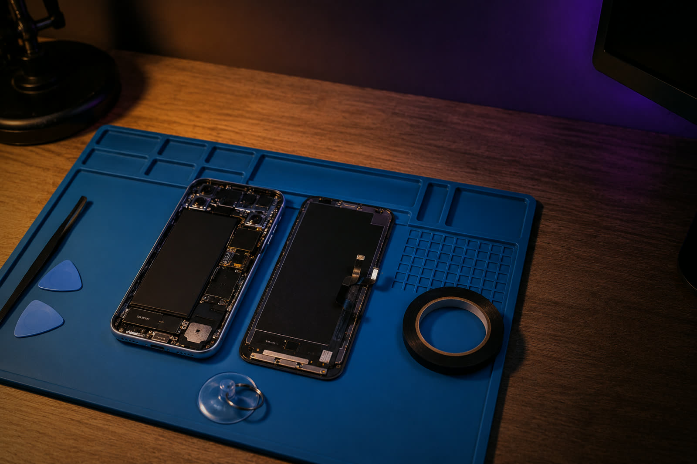
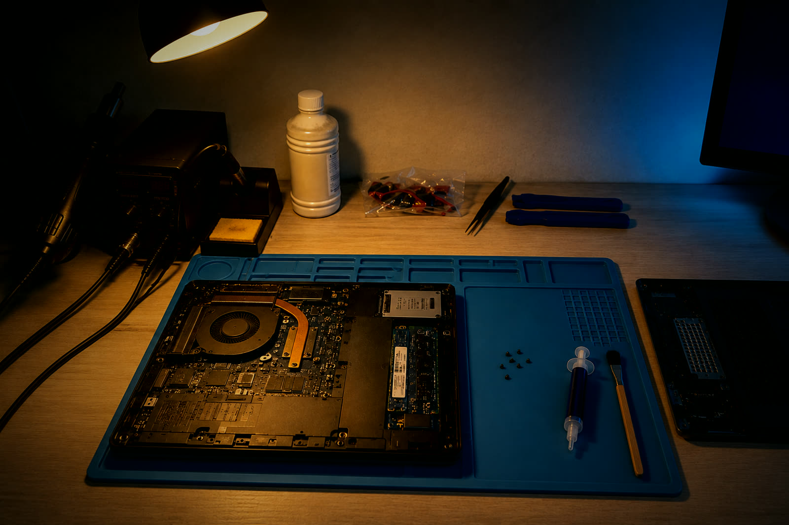
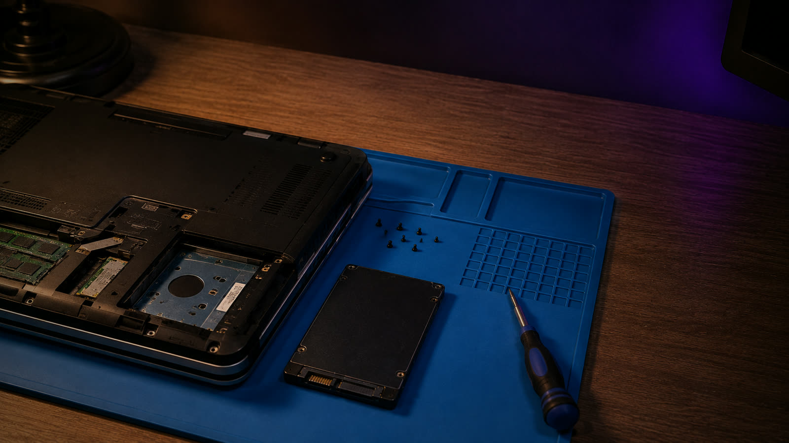

Me llamo Luis y arreglo cosas que otros dan por perdidas
Soy técnico informático y trabajo desde mi propio banco, con estación de soldadura y herramienta de precisión. No tengo tienda de cara al público, así que quedamos donde te venga bien en Córdoba.
Me escribes por WhatsApp contándome qué le pasa al aparato. Te digo el precio y el plazo antes de que me dejes nada, y si hay que pedir una pieza te aviso de cuánto tarda antes de que decidas. Sin diagnósticos que se pagan aparte ni presupuestos que suben a mitad de camino.
Lo que mejor se me da son los mandos y los Joy-Con. Un stick de efecto Hall bien puesto se olvida del drift para siempre, y eso lo dejo listo casi siempre el mismo día.

Tarifas
- 01 Drift de mandosLe pongo un stick de efecto Hall, que trabaja por imán y no roza contra nada. Ese mando ya no vuelve a driftear. Joy-Con, Pro Controller, PS5 y Xbox. desde 20 €
- 02 Limpieza y pasta térmicaPara la consola que se apaga sola o el portátil que suena como un secador. Abro, limpio disipador y ventilador, y cambio la pasta. desde 32 €
- 03 SSD y clonado de tu sistemaPaso tu Windows tal cual: programas, archivos y contraseñas siguen donde estaban. El disco no va incluido, te digo cuál comprar. 40 €
- 04 Instalación limpia de WindowsEl equipo de cero, con los drivers puestos y las actualizaciones hechas. 28 €
- 05 Pantallas, baterías y tecladosDime el modelo exacto y te busco la pieza. Te paso precio cerrado y cuánto tarda en llegar. según modelo
Si no lo arreglo, no cobro
Y si hace falta pedir una pieza cara, te digo lo que cuesta antes de encargarla.
Estos precios son de entrega en mano en Córdoba. Si estás fuera también te lo arreglo, pero el porte de ida y vuelta va aparte y lo pagas tú: dime de dónde escribes y te lo calculo antes de cerrar nada.

Cómo va
-
01
Me cuentas qué le pasa
Por WhatsApp, con el modelo del aparato. Si se ve algo raro por fuera, mándame una foto.
-
02
Te paso precio y plazo
Los dos cerrados. Cuando hay que encargar una pieza te digo cuánto tarda antes de que me dejes el aparato.
-
03
Le hago fotos antes de abrirlo
Te las mando para que veas cómo llegó. Así ninguno de los dos discute después por una marca que ya estaba.
-
04
Lo recoges funcionando
Te lo enseño montado y encendido, lo probamos juntos, y entonces pagas.

Lo que suelen preguntarme
- ¿Cuánto tardas?
- Si tengo la pieza, el mismo día o al siguiente. Si hay que pedirla te digo el plazo antes de que me dejes nada: hay repuestos que llegan en dos días y otros que tardan tres semanas.
- ¿Y si al final no tiene arreglo?
- Te lo devuelvo como estaba y no me pagas la mano de obra. Si para averiguarlo hacía falta comprar una pieza cara, eso lo hablamos antes de encargarla y no después.
- ¿Dónde quedamos?
- En Córdoba capital, donde te venga bien. No tengo tienda: soy yo y mi banco de trabajo, así que quedamos y ya está.
- ¿Cómo se paga?
- Efectivo o Bizum, al recogerlo y después de probarlo delante de ti. Cuando el arreglo lleva una pieza cara, esa va por adelantado, porque si te echas atrás me quedo con un repuesto que no sirve para otro aparato.
- ¿Voy a perder la garantía?
- Si el aparato todavía está en garantía, llévalo primero al servicio oficial. Te sale gratis y no tiene sentido que lo pagues. Si veo que es tu caso te lo digo yo, aunque me quede sin el trabajo.
- ¿Y si no vivo en Córdoba?
- También te lo arreglo, pero el porte de ida y vuelta lo pagas tú y te lo calculo antes de cerrar nada. Para un mando suele compensar; para un portátil, casi nunca.
Lo que no hago
Daños por agua, recuperación de datos y trabajo a nivel de placa base. Necesitan equipo y experiencia que ahora mismo no tengo, y prefiero decírtelo de entrada. Si me llega algo así te digo dónde llevarlo, aunque no me lo quede yo.
Dime qué aparato es y qué le pasa
Contesto el mismo día. Si es algo que puedo resolver en el momento, lo sueles tener de vuelta en 24 horas.
Escríbeme por WhatsApp Es por donde trabajo. No cojo llamadas.Si prefieres el correo, luishidalgoa@outlook.es. Tardo algo más en verlo.
Entrego en mano en Córdoba capital. Si estás fuera, el porte lo pagas tú y te lo calculo antes de cerrar nada.